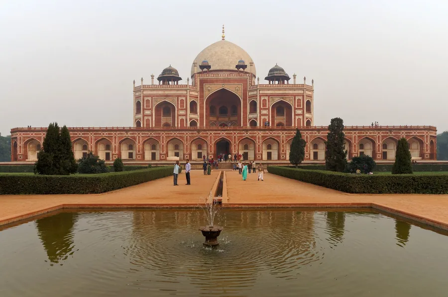

Ranked by how far it is from your door — 29 Oct to 30 Nov.
51 events across 676 Delhi-NCR neighbourhoods — concerts, exhibitions, melas, walks and
processions. Type your area or pincode and the list reorders itself, nearest first.
Every card tells you whether you sit or walk, whether there's food, and what the thing is actually about.

Humayun's Tomb
Events
51+
Free entry
47
Neighbourhoods
676
Window
33 days
India International Centre✳India Habitat Centre✳Travancore Palace✳Alliance Française de Delhi✳Aga Khan Hall✳Ojas Art, Mehrauli✳Gallery Exhibit 320✳Nature Morte✳Bikaner House✳Vadehra Art Gallery✳Durga Bari Mandir, GK-1✳Hazrat Nizamuddin Dargah✳IGNCA, Janpath✳Lodhi Garden✳India International Centre✳India Habitat Centre✳Travancore Palace✳Alliance Française de Delhi✳Aga Khan Hall✳Ojas Art, Mehrauli✳Gallery Exhibit 320✳Nature Morte✳Bikaner House✳Vadehra Art Gallery✳Durga Bari Mandir, GK-1✳Hazrat Nizamuddin Dargah✳IGNCA, Janpath✳Lodhi Garden✳
Type the area you are in and the list reorders itself — nearest first. Every event is free unless it says otherwise.
When
Cost
Format
All 51 events, soonest first.
Tip: click any venue further down to see only what is on there. Everything below is free unless it says otherwise.
Forests as memory and presence — two Adivasi painters from Madhya Pradesh and Chhattisgarh painting the places they come from.
What happens
A group show in a small gallery above a courtyard — canvases on the walls, a few works on paper in the inner room. It is two artists' worlds rather than a survey, so it reads quickly and closely.
What happens, hour by hour
11:00 amGallery opens
any timeThe canvases and the works on paper
6:30 pmClose
Food
No food at the gallery.
Before you go
Entry
Free.
Getting there
Qutub Minar (Yellow), then a 10-minute walk down Anuvrat Marg.
How long
30–40 minutes.
Worth knowing
Runs to 15 November, so this is one of the first things to lapse.
Time, material and memory — what remains, what passes and what returns, worked out across one artist's practice.
What happens
A solo hang across the main room and the inner gallery, with the larger works at the back. Twenty minutes if you move quickly, an hour if you read everything.
What happens, hour by hour
11:00 amGallery opens
any timeMain room, then the inner gallery
6:30 pmClose
Food
Nothing on site; Lado Sarai has a couple of cafés.
Before you go
Entry
Free.
Getting there
Saket (Yellow/Magenta), then a 10-minute auto along Mehrauli-Badarpur Road.
How long
30–45 minutes.
Worth knowing
Lado Sarai has five or six galleries within walking distance — this is the one to pair with others.
Manisha Parekh's practice, in its second instalment at Nature Morte — work that sits between drawing, sculpture and installation, made for a room rather than a wall.
What happens
One gallery, one artist, a handful of rooms. You walk through at your own pace and read the wall text at the entrance, which is worth two minutes before you start looking.
What happens, hour by hour
10:00 amGallery opens
any timeThe rooms, at your own pace
6:00 pmClose — closed Sundays
Food
No food; Gulmohar Park's cafés are a short walk.
Before you go
Entry
Free, open to all.
Getting there
Green Park (Yellow) or Hauz Khas (Yellow/Magenta), then a 10-minute walk.
How long
20–40 minutes.
Worth knowing
Closed Sundays. Nature Morte also runs a second space at The Dhan Mill in Chhatarpur — check which one before you go.
Tue 27 OctWalk and lookNo foodfreeUntil 1 NovLast week
You walk two floors at your own pace. No seating, no schedule, no performance.
CCA Building, Bikaner House, Pandara Road, New Delhi 110011MapviaCity on View
Khan Market · Violet · ~18 min walk
What it is
Indigo as a commodity and a colonial wound — the plantation economy, forced labour, migration and trade that turned a plant into 'blue gold', traced through Shelly Jyoti's textile work over eighteen years.
What happens
Two floors of work in one continuous hang: large indigo-dyed textile pieces, smaller works, and an archival room with sample books, contracts and photographs. You move at your own pace — there is no sequence to follow.
What happens, hour by hour
11:00 amDoors open on the ground floor
any timeGround floor: the large textile works
any timeFirst floor: the archival room — sample books, contracts, photographs
7:00 pmClose, daily until 1 November
Food
Nothing at the venue — Khan Market is a ten-minute walk.
Before you go
Entry
Free, open to all — no registration.
Getting there
Khan Market (Violet) 1 km, or Udyog Bhawan (Yellow) 1.2 km.
How long
45–90 minutes for both floors.
Worth knowing
Ground and first floor — people often see only one. The archival room upstairs is the reason to go.
Migration, collecting and translation — Banerjee's figures are travellers carrying objects from everywhere and nowhere, and this show asks what happens when those works come back to South Asia.
What happens
A single large room of paintings and assemblages, with sculpture on plinths between them. You walk it slowly — most of the looking is in the detail, since the surfaces carry shells, sequins and sari trim. No sequence, no seating.
What happens, hour by hour
10:00 amGallery opens
any timeThe main room — paintings first, sculpture between
any timeWall text at the entrance sets up the show
6:00 pmClose — closed Sundays
Food
Nothing at the gallery — Defence Colony market is two minutes away and full of options.
Before you go
Entry
Free. Walk in, no ticket, no registration.
Getting there
Lajpat Nagar (Violet/Pink) or Moolchand (Violet), then a short auto to Defence Colony market.
How long
30–45 minutes for the main room.
Worth knowing
Closed Sundays. Runs to 18 November. Galleries rarely put prices on the wall — ask at the desk for the price list if you're curious.
Thu 29 OctSit and listenNo foodfreeUntil 3 NovLast week
You're seated in an auditorium for an illustrated lecture of about an hour, then questions. The exhibition is a separate walk-through you do before or after.
India International Centre, 40 Max Mueller Marg, Lodhi Estate, New Delhi 110003MapviaDelhi Events
Khan Market · Violet · ~18 min walk
What it is
The lecture is on the archaeological evidence for tree worship in Indian art: how trees, groves and yaksha shrines were venerated before temple-building, and what the surviving sculpture and texts actually show. The exhibition alongside looks at how nature is described in South Asian texts and traditions.
What happens
A quiet opening. The exhibition in the Annexe is up from 4 pm and people drift between that and the main building; at 6:30 everyone settles into the auditorium for the keynote — roughly an hour of illustrated lecture, then questions. The evening breaks up around 8.
What happens, hour by hour
4:00 pmExhibition opens in the Annexe gallery — South Asian texts and traditions
6:30 pmKeynote in the C.D. Deshmukh Auditorium: Naman P. Ahuja on tree worship in Indian art
~7:40 pmQuestions from the floor
~8:00 pmHall empties; people drift back to the exhibition
Food
Nothing laid on for the opening night — the IIC café is open, and the festival's food counters only start on the 30th.
Before you go
Entry
Free. No ticket, no registration — walk in and sit.
Getting there
Khan Market (Violet) or Jor Bagh (Yellow), both about 1.5 km.
How long
The keynote runs 60–75 minutes; stay for the exhibition opening after.
Worth knowing
The exhibition is in the Annexe building, the talk is in the main building. Two different doors.
Thu 29 OctWalk and shopFood on sitefreeUntil 6 NovLast week
You wander a temple hall of stalls — diyas, décor, clothes, sweets. Nothing to sit through and no stage programme.
Durga Bari Mandir, C Block, Greater Kailash-1, New Delhi 110048Mapviadelhi2go.in
Greater Kailash · Magenta · ~10 min walk
What it is
Pre-Diwali shopping — diyas, decorations, clothes and sweets, aimed squarely at the festival.
What happens
Stalls laid out through the temple hall — diyas, decorations, clothes, sweets — with the organisers manning them. You walk through, look, buy what you like and leave. There's no stage, no programme, no speeches.
What happens, hour by hour
11:00 amStalls open in the temple hall
through the dayDiyas, decorations, clothes, sweets — no stage, no speeches
to 6 NovRuns daily, so no need to rush
Food
Sweets and snack stalls as part of the exhibition — nothing substantial.
Before you go
Entry
Free.
Getting there
Greater Kailash (Magenta) or Kailash Colony (Violet), then a 10-minute walk to C Block.
How long
20–30 minutes to browse — it runs 11 am to 9 pm daily to 6 November.
Thu 29 OctSit on the floorNo foodfreeEvery Thursday, from sunset
You sit on the floor in a courtyard and listen to live qawwali — harmonium, dholak, tabla and voices — for an hour or more. Standing at the back is fine too.
Hazrat Nizamuddin Auliya Dargah, Nizamuddin West, New Delhi 110013Mapviaindiago.app
JLN Stadium · Violet · ~16 min walk
What it is
Sufi poetry in Urdu and Persian, sung to build toward trance — mostly Amir Khusrau and other Chishti-lineage poets, in praise of the saint and of God.
What happens
The qawwals sit cross-legged with harmonium, dholak and tabla and start low — one voice over a drone — then build verse by verse until the whole party is singing and the audience is clapping the beat. People sit on the floor in a ring; the crowd thickens as it gets louder.
What happens, hour by hour
sunsetQawwals settle in cross-legged; harmonium, dholak and tabla tune up
+15 minOne voice over a drone — the slow opening
+45 minVerses build, the full party singing, audience clapping the beat
+90 minPeak, then a wind-down
Food
Nothing at the dargah itself. The lane outside is full of kebab and biryani shops — eat before or after.
Before you go
Entry
Free, no ticket. Head covered, shoes off at the lane.
Getting there
JLN Stadium (Violet) or Jangpura, then a short auto — ask for the dargah gate, not the basti.
How long
60–90 minutes from sunset; longer on Urs nights.
Worth knowing
Thursdays only. Women may enter the courtyard but not the inner chamber.
You walk around a single reconstructed room and read the labels. Twenty to forty minutes.
IGNCA Exhibition Hall, Janpath Building, 11 Man Singh Road, New Delhi 110001MapviaIGNCA
Udyog Bhawan · Yellow · ~9 min walk
What it is
The sarangbang was the study where a Confucian scholar of Korea's Joseon dynasty read, wrote calligraphy and received guests — reconstructed from the Onyang Folk Museum's collection with its desk, oil lamp, ink stone, brush, wooden pillow and brazier.
What happens
A single reconstructed room, seen from the threshold and around it: a scholar's desk with its writing set, lamp and brushes, with wall texts explaining each object. Small and quiet — twenty minutes if you read everything.
What happens, hour by hour
10:30 amHall opens
any timeThe room itself, viewed from the threshold
any timeWall texts on the scholar's day and each object
5:30 pmClose — weekdays only, shut at weekends
Food
Nothing at IGNCA; Connaught Place is a fifteen-minute walk.
Before you go
Entry
Free, walk in.
Getting there
Udyog Bhawan (Yellow) or Shivaji Stadium (Airport Express), then a short walk.
How long
20–40 minutes.
Worth knowing
IGNCA is closed at weekends — go on a weekday. Hours about 10:30 am to 5:30 pm.
Identifying Delhi's resident and winter birds by call and habitat, inside a 15th-century tomb garden.
What happens
The group walks slowly between the tombs, stopping every few minutes: the guide plays a call, points into a canopy, explains what you're actually hearing. Ends with a run-through of what was spotted and where.
What happens, hour by hour
6:00 amMeet at the gate, introductions, binoculars out
6:15 amSlow walk between the tombs, stopping at calls and hollows
7:45 amRun-through of what was spotted
Food
No food. Eat first; Khan Market is ten minutes away afterwards.
Before you go
Entry
Free.
Getting there
Jor Bagh (Yellow) or Khan Market (Violet). Gate 1 is nearest the tombs.
How long
About 2 hours, 6 am sharp.
Worth knowing
Binoculars if you own them; the group is usually 10–20 people. Dark and cold at 6 am.
Fri 30 OctWalk and lookFood on sitefree · registerUntil 1 NovLast week
Self-guided: you walk through halls of wildlife photography, sculpture and stalls at your own pace, and sit in on a panel or workshop if one is running.
Travancore Palace, Kasturba Gandhi Marg, New Delhi 110001MapviaStayHappening
Mandi House · Blue/Violet · ~6 min walk
What it is
Wildlife conservation and ecotourism — this year themed on Asian elephant conservation corridors, with photography, art and operators selling jungle trips.
What happens
Halls of exhibits — wildlife photography prints, sculpture, stalls from eco-lodges and conservation NGOs — with a stage running panels and short workshops through the day. You wander, talk to the people at the tables, and sit in on whatever session is on.
What happens, hour by hour
10:00 amHalls open — wildlife photography, sculpture, eco-lodge and NGO stalls
through the dayPanels and short workshops on the stage
5:00–7:00 pmHalls wind down
Food
Food stalls and a cafeteria inside the venue.
Before you go
Entry
Free visitor pass, but online registration is compulsory. Entry only with the confirmation and a photo ID.
Getting there
Mandi House (Blue/Violet), about a 15-minute walk. Baroda House bus stop is closer.
How long
2–3 hours for the halls.
Worth knowing
No wi-fi, no single-use plastic, food stalls inside. Runs 30 Oct – 1 Nov.
Fri 30 OctWalk and shopFood on sitefreeUntil 5 NovLast week
An open-air market you walk through — 260+ stalls. In the evening there's a stage programme (dandiya, a fashion show, street theatre) that you stand or sit on the grass for.
The Blind Relief Association, Lal Bahadur Shastri Marg, Lodhi Road, New Delhi 110003MapviaDelhi Fun Dos
Jor Bagh · Yellow · ~14 min walk
What it is
Festive shopping where the goods are made by visually impaired artisans and trainees; the cause is the point of the market.
What happens
An open-air market across the lawns: 260+ stalls of candles, diyas, soaps, paper goods and food. Evenings bring a stage programme — dandiya, a fashion show by visually impaired youth, street theatre on inclusion, and a children's pot-painting contest.
What happens, hour by hour
10:30 am260+ stalls open across the lawns
through the dayCandles, diyas, soaps, paper goods, food counters
eveningStage programme — dandiya, fashion show, street theatre, pot-painting contest
8:00 pmClose, daily to 5 November
Food
Food stalls across the lawns — snacks and festive sweets.
Before you go
Entry
Free, open to all.
Getting there
JLN Stadium (Violet) or Khan Market. The lawns are behind The Oberoi.
How long
1–2 hours.
Worth knowing
Carry cash — networks jam and UPI fails at peak hours. Daily to 5 November.
You sit — chairs in front, grass behind — for about 90 minutes of Bharatanatyam with live music. Afterwards there's food and a film indoors.
Fountain Lawns, India International Centre, 40 Max Mueller Marg, New Delhi 110003Mapviaiicdelhi.in
Khan Market · Violet · ~18 min walk
What it is
Bharatanatyam in the Pandanallur style — a full margam of pure dance and expressive pieces, on a nature-and-earth theme, with live Carnatic music.
What happens
Inauguration first: lamp-lighting, a couple of short speeches, then the recital itself — a full Bharatanatyam margam with live orchestra, around 90 minutes. Afterwards the food counters open and a film starts indoors.
What happens, hour by hour
6:30 pmInauguration — lamp lighting, short speeches by Shyam Saran
6:50 pmScent of the Earth: a full Bharatanatyam margam with live orchestra
~8:00 pmRecital ends; Odia food counters open
8:30 pmUmrao Jaan (1981), 4K restoration, indoors
Food
The Odia food counter opens at 8 pm straight after the recital — Taste of Kalinga. Part of the festival, paid per plate.
Before you go
Entry
Free, first-come. Outdoors, so capacity is generous.
Getting there
Khan Market (Violet), 1.5 km.
How long
About 90 minutes, then food and a film if you stay.
Worth knowing
The lawns cool sharply after 8 pm — bring a layer.
How an artist's practice changes over a career — what the work was, what it became, and what it costs to keep going.
What happens
Two people in conversation on the amphitheatre steps — one artist, one gallerist — working through a career, with images of the work as reference, then questions from whoever's sitting around.
What happens, hour by hour
5:30 pmIntroductions on the amphitheatre steps
5:40 pmThe conversation: a career, the work, what changed
6:20 pmQuestions from the audience
Food
No food, though Triveni's café is open in the same complex.
Before you go
Entry
Free, no registration.
Getting there
Mandi House (Blue/Violet), a 7-minute walk up Tansen Marg.
How long
About 60 minutes including questions.
Worth knowing
It's the open-air amphitheatre, not the auditorium. Galleries open beforehand.
Milan Kundera's first novel — a man's life is destroyed by a joke on a postcard in communist Czechoslovakia. It's about betrayal, ideology and revenge.
What happens
Everyone has read (or skimmed) the book. The moderator opens with context, then the group argues about it — the joke, the betrayal, whether Kundera is cruel or just honest. Expect strong opinions and at least one person who loved it in college.
What happens, hour by hour
6:00 pmModerator sets up the novel and its context
6:15 pmOpen discussion — the joke, the betrayal, the politics
7:30 pmClose
Food
Usually tea and coffee only — eat before you go.
Before you go
Entry
Free; reading-circle events usually expect a quick RSVP on afdelhi.org.
Getting there
Khan Market (Violet), 1.5 km along Max Mueller Marg.
How long
90 minutes.
Worth knowing
In English unless the listing says otherwise. Library open beforehand.
Ghalib's ghazals — love, loss, faith, drink, and Delhi's decline in the 1850s, in the verses most people know by heart.
What happens
A staged evening of ghazals: singers with harmonium and tabla alternating with straight recitations, built around Ghalib's best-known verses, with a compere linking one to the next.
What happens, hour by hour
7:30 pmGhazals sung and recited in alternation
throughA compere links one verse to the next
~9:00 pmClose
Food
No free food; Habitat's restaurants and café are open on site.
Before you go
Entry
Usually free — confirm on 4366 3080 / 85 / 90.
Getting there
Jor Bagh (Yellow) or Khan Market (Violet).
How long
About 90 minutes.
Worth knowing
The Stein is inside the main complex past the atrium, not visible from Lodhi Road.
Two hours on your feet with frequent stops. The leader points things out and explains them — it's a walk, not a performance.
Travancore Palace, Kasturba Gandhi Marg, New Delhi 110001MapviaStayHappening
Mandi House · Blue/Violet · ~6 min walk
What it is
Nature-reading: how to interpret what animals and plants leave behind — droppings, chewed leaves, calls, tracks.
What happens
A slow walk with stops. The leader picks a leaf, a web, a broken twig, a distant call, and gets everyone to look properly before explaining what it tells you. Ends with a debrief on how to keep noticing on your own.
What happens, hour by hour
9:00 amGather at the palace; briefing on what to look for
9:15 amWalk with stops — a leaf, a web, a broken twig, a call
10:45 amDebrief on noticing on your own
Food
No food. Carry water — you'll be outdoors for two hours.
Before you go
Entry
Included with the fair — but you need the fair's registration pass first.
Mixed: a seated panel at 10:30, a gallery you walk through at 11:30, and a poetry reading at 12:30 you sit for.
Kamaladevi Complex, India International Centre, 40 Max Mueller Marg, New Delhi 110003Mapviaiicdelhi.in
Khan Market · Violet · ~18 min walk
What it is
Early 19th-century company-school bird painting — Indian artists painting Indian species for East India Company patrons, in watercolour, with great accuracy.
What happens
A gallery of small watercolours and company-school paintings in vitrines, labelled by species and patron. A short opening, then you walk the room at your own pace.
What happens, hour by hour
10:30 amPanel discussion on wildlife conservation
11:30 amExhibition opens in the Kamaladevi gallery
12:30 pmPoetry reading in Hindi, English and six regional languages
Food
Nothing in the gallery; the IIC café is in the next building.
Before you go
Entry
Free, no ticket.
Getting there
Khan Market (Violet). Kamaladevi is a separate block from IIC main.
How long
30–45 minutes.
Worth knowing
Three things stack up: panel 10:30, exhibition 11:30, poetry reading 12:30.
Seated outdoors for a 75-minute solo set — one woman singing with ektara and duggi, explaining each song as she goes.
Fountain Lawns, India International Centre, 40 Max Mueller Marg, New Delhi 110003Mapviaiicdelhi.in
Khan Market · Violet · ~18 min walk
What it is
Baul songs — Bengali mystic poetry about the body as a vessel, the guru, and the search for the divine inside yourself.
What happens
She sings sitting down with ektara and duggi, ankle bells on one foot, and stops between songs to explain the verse she just sang. One continuous set of about 75 minutes, no interval.
What happens, hour by hour
6:30 pmShe settles with ektara, duggi and ankle bells
through the setSongs, with the verse explained between each
~7:45 pmClose — no interval
Food
Jharkhand food counters open at 8 pm after the set — Lost Flavours. Paid per plate.
Before you go
Entry
Free, first-come. Arrive 30 minutes early — this one fills.
Getting there
Khan Market (Violet), 1.5 km.
How long
About 75 minutes, no interval.
Worth knowing
She explains each song between verses, so you don't need Bengali.
Paintings by teenagers with autism, Down syndrome and neurodivergent traits — the work itself is the subject, and the workshops are taught by the artists.
What happens
Paintings hung along the walls with the young artists standing beside their own work, and workshop tables where they show you how they paint. You can buy, watch, or join a session.
What happens, hour by hour
2:00 pmExhibition opens; the young artists stand with their work
2:30 pmWorkshops begin — they teach you how they paint
7:00 pmClose, Saturday and Sunday only
Food
Snacks, not a meal.
Before you go
Entry
Free entry. Workshops ₹250 — register on arrival, 8800020511.
Entirely self-guided — several galleries you walk through at your own pace. No seating, no schedule, no performance.
Lalit Kala Akademi, Rabindra Bhawan, 35 Ferozeshah Road, New Delhi 110001MapviaLalit Kala Akademi
Mandi House · Blue/Violet · ~6 min walk
What it is
The Akademi's national juried selection — contemporary Indian painting, sculpture, printmaking and installation, plus the Print Biennale.
What happens
Several galleries of juried work — painting, sculpture, prints, installation — with the print biennale in a separate hall. Free to wander at your own pace; no guided route.
What happens, hour by hour
10:00 amGalleries open — painting, sculpture, prints, installation
any timePrint Biennale India in the separate hall
5:00 pmShow closes for good after today
Food
No food on site; the Mandi House cafés are five minutes away.
Before you go
Entry
Free.
Getting there
Mandi House (Blue/Violet), 5-minute walk to Rabindra Bhawan.
How long
45–60 minutes.
Worth knowing
Genuinely the last day — the show closes after 31 October.
A working studio you walk around, with prints on tables. Informal — talk to whoever's there.
Artography Studio, Pitampura / Raja Garden, New DelhiMapviadelhi2go
Pitampura · Red · ~9 min walk
What it is
Photography and art from a working studio — a small, local show.
What happens
A working studio with work on the walls and prints stacked on tables, the photographers usually there in person. Informal — you look, and talk to whoever's around.
What happens, hour by hour
10:00 amStudio opens
through the dayWork on the walls, prints stacked on tables, photographers present
eveningClose
Food
No food.
Before you go
Entry
Free.
Getting there
Pitampura (Red) or Netaji Subhash Place (Red/Pink).
How long
30–45 minutes.
Worth knowing
A working studio rather than a gallery — ring ahead if coming from far.
Festive fashion, jewellery, décor and gifting — shopping, not culture.
What happens
Rows of stalls in an air-conditioned hall — clothes, jewellery, décor, food counters — plus a tarot reader and a mehndi counter. Walk in, browse, buy, leave.
What happens, hour by hour
11:00 amStalls open — 163 of them, indoors
through the dayClothes, jewellery, décor, food, tarot, mehndi
8:00 pmClose
Food
Food counters inside the hall.
Before you go
Entry
Free visitor entry.
Getting there
HUDA City Centre (Yellow), then about 10 minutes by cab.
How long
1–2 hours.
Worth knowing
Indoor and air-conditioned — a bad-AQI fallback. Runs 31 Oct – 2 Nov.
Seated for two and a half hours of short performances. You can also sign up at the desk and perform yourself.
Unmukt Studio, RZ-C/9, Palam Metro Road, Palam, New Delhi 110045Mapviatheunmukt.com
Palam · Magenta · ~3 min walk
What it is
An open mic: poetry, stories, comedy and songs. The subject changes with whoever's on stage.
What happens
The host opens, then performers take the mic in turn — poetry, a story, comedy, a song — five to eight minutes each. Two and a half hours with a short break.
What happens, hour by hour
4:30 pmDoors; sign up to perform at the desk
5:00 pmHost opens, then performers in turn — 5–8 minutes each
7:30 pmClose
Food
Nothing included; cafés nearby.
Before you go
Entry
₹149 on BookMyShow. Performers sign up at the desk, subject to slots.
Getting there
Palam (Magenta), Gate 3 — the studio is 20 m away.
How long
2.5 hours, 5–7:30 pm.
Worth knowing
Not for children; photo ID required. Parking available.
Asha Bhosle's film songs and semi-classical pieces, sung at dawn as a tribute to her.
What happens
A stage in the park, singers with a small orchestra, audience on chairs in the dark. Opens at 6 am with a welcome, then works through Asha Bhosle's catalogue and semi-classical pieces, ending around 8.
What happens, hour by hour
5:30 amGates; the audience settles on chairs in the dark
6:00 amWelcome, then the programme opens with a bhajan
6:30 amAsha Bhosle's catalogue and semi-classical pieces
~8:00 amClose
Food
Chai and snack stalls open early around Connaught Place — nothing organised by the concert.
Before you go
Entry
Free, but seat-numbered. Register on delhimarathi.org.
Getting there
Rajiv Chowk (Blue/Yellow). Central Park sits above the station.
How long
About two hours from 6 am.
Worth knowing
Dark and cold at 6 am in November — carry a jacket. Chai stalls open early.
Seated indoors for about 75 minutes of Hindustani vocal with harmonium and tabla. Films follow in the same building.
C.D. Deshmukh Auditorium, India International Centre, 40 Max Mueller Marg, New Delhi 110003Mapviaiicdelhi.in
Khan Market · Violet · ~18 min walk
What it is
Hindustani classical vocal from the Kumar Gandharva tradition — spare, unusual phrasing, ragas sung slowly.
What happens
A seated vocal recital with harmonium and tabla — a slow alap, then compositions, about 75 minutes. Films follow in the same building if you want to stay.
What happens, hour by hour
11:00 amAlap — unaccompanied, slow
11:20 amCompositions with harmonium and tabla
~12:15 pmClose; films follow at 1 pm and 3:30 pm
Food
Nothing during the recital; the IIC café is open.
Before you go
Entry
Free, first-come. 230 seats — the tightest room of the festival.
Getting there
Khan Market (Violet) or Jor Bagh (Yellow).
How long
About 75 minutes.
Worth knowing
Films follow at 1 pm and 3:30 pm — you can make a day of it indoors.
Seated outdoors for about an hour of Thai masked dance-drama — the costumes and masks are the spectacle as much as the story.
Fountain Lawns, India International Centre, 40 Max Mueller Marg, New Delhi 110003MapviaKala
Khan Market · Violet · ~18 min walk
What it is
The Ramakien — Thailand's version of the Ramayana — performed in the masked court style, with the story carried by gesture, costume and music.
What happens
The troupe performs the Ramakien episode in full costume with a Thai ensemble. The masks and gold-threaded costumes carry as much of the story as the dance does — the hand movements are slow and very precise. Around an hour.
What happens, hour by hour
6:30 pmThe ensemble takes the stage in masks and gold-threaded costume
throughThe Ramakien episode — slow, precise hand movements, gongs and drums
~7:30 pmClose
Food
Afghan food counters open at 8 pm after the performance — The Afghan Table. Paid per plate.
Before you go
Entry
Free, outdoors, first-come.
Getting there
Khan Market (Violet), 1.5 km.
How long
Around 60 minutes.
Worth knowing
Confirmed at 6:30 pm on the Fountain Lawns by the festival's own schedule — an earlier listing said 1 pm and was wrong. It is outdoors: sit near the front to actually see the masks.
Sun 1 NovWalk and shopNo foodfreeUntil 3 NovLast week
You walk between tables of fabric, pull pieces out, feel the weave and talk to the weavers. No seating, no stage.
Aga Khan Hall, 6 Bhagwan Das Road, Mandi House, New Delhi 110001MapviaThe Optimist
Mandi House · Blue/Violet · ~6 min walk
What it is
Handloom: Banarasi, Kanjeevaram, Chanderi, Maheshwari, Jamdani and block print, sold by the weavers themselves.
What happens
Sarees and fabric folded on tables with the weavers standing behind them. You can pull a piece out, feel the weave, and ask where and how it was made. No stage, no programme.
Seated for about two hours of five-minute sets, mostly Hindi poetry and spoken word.
Hideout Studio, Shop 1/Basement, PVR Anupam, Saket Road, Saket, New Delhi 110017MapviaGigs N Shows
Saket · Yellow/Magenta · ~5 min walk
What it is
Open-mic poetry and spoken word in Hindi — the subject varies by performer.
What happens
An open mic with a host and a sign-up list: performers do about five minutes each, mostly poetry and spoken word in Hindi, with a small audience that came to listen.
What happens, hour by hour
12:00 pmHost opens; sign-up list closes
throughPerformers in turn, about five minutes each
2:00 pmClose
Food
Nothing included in the ticket.
Before you go
Entry
₹199 on BookMyShow.
Getting there
Saket (Yellow/Magenta), then the basement below PVR Anupam.
The ghatam — a clay pot played with the palms and fingers — and the people who play it, told through Sumana Chandrashekar's book on its history, legend and craft.
What happens
A conversation first — Sumana Chandrashekar with Navtej Johar on the book and the instrument's history — then a live ghatam performance, which is the part most of the room has come for.
What happens, hour by hour
7:00 pmWelcome; the book is introduced
7:10 pmConversation with Navtej Johar
~7:50 pmLive ghatam performance
~8:30 pmClose
Food
No free food; Habitat's restaurants and café are open on site.
Before you go
Entry
Free — no ticket mentioned; the desk confirms on the day.
Getting there
Jor Bagh (Yellow) or Khan Market (Violet), then a 10-minute walk.
How long
About 90 minutes.
Worth knowing
The ghatam is a clay pot played with the palms — hearing it live is the point of the evening.
Urdu and Hindi poetry — nazms and ghazals on love, loss and the ordinary.
What happens
Six poets take the mic in turn through the afternoon, each doing a set of ten to fifteen minutes, with the host linking them. It is a cafe room, so people drift in and out and the audience is close enough to heckle affectionately.
What happens, hour by hour
1:00 pmDoors; the room fills
1:15 pmPoets begin, in turn
~3:00 pmClose, or drift on for chai
Food
It is a café — coffee and snacks throughout, paid.
Before you go
Entry
Free — RSVP through the organiser's page.
Getting there
IFFCO Chowk (Yellow) or Sikanderpur (Yellow/Rapid Metro), then a short cab.
How long
About two hours from 1 pm.
Worth knowing
Free but capacity is small, so an RSVP actually matters here.
Seated outdoors for about 75 minutes of solo rudra veena — very slow, very quiet. Not a programme to arrive late to.
Fountain Lawns, India International Centre, 40 Max Mueller Marg, New Delhi 110003Mapviaiicdelhi.in
Khan Market · Violet · ~18 min walk
What it is
Dhrupad on the rudra veena — the oldest surviving form of Hindustani instrumental music, where a single raga unfolds very slowly.
What happens
One musician, one instrument. A slow Dhrupad alap unfolds over the first half hour — single notes bent and held — then a composition. The audience barely moves; it is the quietest hour of the festival.
What happens, hour by hour
6:30 pmAlap begins — single notes bent and held
~7:00 pmComposition, still slow
~7:45 pmClose
Food
A French food evening opens at 8 pm after the recital — Une Soirée Française. Paid per plate.
Before you go
Entry
Free, outdoors.
Getting there
Khan Market (Violet).
How long
About 75 minutes.
Worth knowing
The quietest, slowest concert of the week — arriving late is most disruptive here.
Seated for a 105-minute film, then a discussion and questions.
Siddhartha Hall, Goethe-Institut / Max Mueller Bhavan, 3 Kasturba Gandhi Marg, New Delhi 110001MapviaFillum
Rajiv Chowk · Blue/Yellow · ~2 min walk
What it is
A dystopian satire: a society where citizens must meet emotional quotas, and people who don't fit the story get edited out. Paula is a background actor who wants a lead role.
What happens
The film runs about 105 minutes, then a discussion led by Vani Subramanian, then questions from the room.
What happens, hour by hour
7:00 pmFilm (about 105 minutes)
~8:45 pmDiscussion with Vani Subramanian
~9:15 pmClose
Food
No food at the Goethe-Institut — eat before.
Before you go
Entry
Free, no registration.
Getting there
Barakhamba Road (Blue) or Rajiv Chowk, both a short walk.
How long
About 2 hours with the discussion.
Worth knowing
German with English subtitles, then a discussion with Vani Subramanian.
Young classical performers — a vocal recital followed by a harmonium recital, both early-career artists.
What happens
Two short sets back to back — a young vocalist, then a harmonium player — with a host introducing each. The Raza Foundation series exists to put early-career performers in front of a small room.
What happens, hour by hour
7:00 pmVocal recital — Radhika Joshi
~7:45 pmHarmonium recital — Mukesh Bharadwaj
~8:30 pmClose
Food
Nothing laid on; Habitat's restaurants are open.
Before you go
Entry
Free.
Getting there
Jor Bagh (Yellow) or Khan Market (Violet).
How long
About 90 minutes, two performers.
Worth knowing
“The Theatre” is the black-box studio, not the Stein — different entrance.
You walk the length of the path with everyone else — no seating, no stage, no programme. Diyas at the kerb and India Gate lit up.
Kartavya Path, India Gate, New Delhi 110001Mapviadelhi2go
Supreme Court · Blue · ~10 min walk
What it is
Diwali itself — diyas, lights, and the whole city walking the same road.
What happens
People walk the length of the path with diyas along the kerb and India Gate lit behind them, photographing each other. In some years a drone show runs overhead around 8 pm.
What happens, hour by hour
5:54–7:50 pmLakshmi Puja muhurat — most families are home for this
after sunsetThe walk: diyas along the kerb, India Gate lit
~8:00 pmDrone show in some years
Food
Street vendors around India Gate, nothing organised — expect crowds at the good ones.
Before you go
Entry
Free and unticketed.
Getting there
Central Secretariat (Yellow/Violet), then walk to the path.
How long
1–2 hours on foot.
Worth knowing
The lawns aren't a picnic licence — follow NDMC's notices. Metro sometimes ends earlier on Diwali night.
Fri–Mon 13–16 NovStand and watchNo foodfreeUntil 16 Nov
You stand at the edge of a ghat and watch families make offerings in the water, with drums and Bhojpuri folk songs throughout. Go as a guest.
Yamuna ghats, Palla to Okhla; plus parks and ponds citywideMapviadelhi2go
Yamuna Bank · Blue · ~8 min walk
What it is
Sun worship — offerings to the setting sun and then the rising sun, the biggest festival for people from Bihar and eastern UP.
What happens
Families gather at the water at sunset with bamboo baskets of fruit and thekua. A priest leads, drums and Bhojpuri folk songs run through it, and the offerings go up as the sun goes down — then everyone waits for sunrise to do it again.
What happens, hour by hour
13 NovNahay Khay — the first day, homes cleaned
14 NovKharna — a day of fasting, food after sunset
15 Nov, sunsetSandhya Arghya — the big evening, families at the water
16 Nov, sunriseUsha Arghya — offerings to the rising sun
Food
The thekua and fruit you'll see are offerings, not for visitors. Street food stalls near the bigger ghats.
Before you go
Entry
Free; the ghats are public.
Getting there
Yamuna Bank (Blue) and Kalindi Kunj (Magenta) are the nearest big clusters.
How long
About 2 hours at sunset on the 15th — that's the evening to go.
Worth knowing
Go as a guest. Keep clear of the water's edge; don't photograph people mid-ritual.
Two women who never met — the Italian Bice Lazzari and India's Nasreen Mohamedi — both working in line, repetition and geometry. Plus two other shows in the building.
What happens
Three floors of exhibitions. The Lazzari–Mohamedi show is hung as a conversation, room by room, so the two practices answer each other. Free, no ticket, walk in.
What happens, hour by hour
gallery hoursThree shows across the floors
any timeLazzari and Mohamedi hung as a conversation, room by room
to 22 DecRuns for seven weeks
Food
No food in the galleries; the mall it sits in has cafés.
Before you go
Entry
Free, always.
Getting there
Saket (Yellow/Magenta) — the museum is inside DLF South Court Mall.
How long
1.5–2 hours for all three shows.
Worth knowing
Also running: Inheritors of Earth and Pata Dekhabo? to 22 November.
Seated for roughly three hours of poetry recitation, with the audience calling out in response. Breaks in the middle.
Aiwan-e-Ghalib Auditorium, Mata Sundri Lane, ITO, New Delhi 110002Mapviadistrict.in
JLN Stadium · Violet · ~16 min walk
What it is
Urdu poetry recited live — ghazals and nazms, with the audience responding to good lines.
What happens
Poets come up one at a time in an agreed order, each reciting two or three pieces; the audience calls out wah and repeats the good lines back. Three hours with a break in the middle.
What happens, hour by hour
4:45 pmDoors; poets take their places on stage
5:00 pmRecitations in the traditional order, wah from the audience
~8:00 pmClose
Food
Nothing included — sometimes tea at the back.
Before you go
Entry
₹99 on District. Unreserved seating, so arrive early.
Getting there
Jangpura or JLN Stadium (Violet), then a short auto.
How long
2–3 hours.
Worth knowing
Mostly Urdu and Hindi. A second mushaira, Yaarana, runs the same evening elsewhere.
You walk with the procession or watch it pass, then eat langar at the gurdwara — free food, served to everyone.
Gurdwara Sis Ganj Sahib, Chandni Chowk, New Delhi 110006Mapviadelhi2go
Chandni Chowk · Yellow · ~5 min walk
What it is
Guru Nanak's birth anniversary — a procession, continuous kirtan, and langar cooked and served to anyone who comes.
What happens
The procession moves through Chandni Chowk with five covered Palkis, brass bands and gatka teams, stopping for water and langar along the way. At the gurdwara: continuous kirtan and langar served without a break.
What happens, hour by hour
day beforeNagar Kirtan procession through Chandni Chowk — five Palkis, brass bands, gatka
24 NovAkhand Path concludes; continuous kirtan at the gurdwara
all dayLangar served without a break
Food
Langar — free food, cooked and served to everyone who comes, all day. Take it when offered.
Before you go
Entry
Free. Langar is free and offered to everyone.
Getting there
Chandni Chowk (Yellow) for Sis Ganj; Patel Chowk for Bangla Sahib.
How long
1–2 hours, longer if you walk with the procession.
Worth knowing
Cover your head — scarves at the gate. Shoes off at the joda ghar.
Dance performed by artists with disabilities; the troupe tours this programme, staged here with Impresario India.
What happens
A staged dance evening: several pieces performed by a troupe of artists with disabilities, introduced between numbers. About ninety minutes, no interval.
What happens, hour by hour
7:00 pmWelcome and introductions
7:10 pmDance pieces in sequence
~8:30 pmClose
Food
No free food; the Habitat café is open.
Before you go
Entry
Free — confirm at the Programmes Desk (4366 3080).
Getting there
Jor Bagh (Yellow) or Khan Market (Violet).
How long
About 90 minutes.
Worth knowing
Wheelchair access is through the main Habitat entrance; the auditorium has step-free seating.
Digital and interactive art — collective drawing, AI portraiture, and projection mapping onto buildings.
What happens
An installation room where drawings sent from your phone appear on a wall screen alongside ones from other cities, plus the AI mirror that repaints you. On one evening a projection turns a building façade into a mural that lasts the night.
What happens, hour by hour
27–28 NovMeet-the-artist and mapping sessions at the Alliance
one eveningFaçade projection — a mural that lasts a single night
dates TBCDelhi leg is still provisional; confirm on the site
Food
No food; the Alliance café is open.
Before you go
Entry
Free.
Getting there
Khan Market (Violet), 1.5 km along Max Mueller Marg.
How long
1–2 hours.
Worth knowing
The 27–28 November dates for Delhi are still provisional — confirm on the site.
Fri 27 NovSit and listenFood on sitefreeUntil 29 Nov
Seated sessions across several stages — you walk between them. Big crowds after 4:30 pm.
Major Dhyan Chand National Stadium, India Gate, New Delhi 110001MapviaThe Optimist
Supreme Court · Blue · ~10 min walk
What it is
Indian writing in the widest sense — literature, poetry, mythology, music and politics across three days, with the Lallantop Adda as the informal heart of it.
What happens
Three stages running at once, plus the Lallantop Adda. You pick a session, sit, and move when it ends — panel discussions and book launches through the day, music and mushaira in the evening. The ground is big; expect to walk between stages and queue at security.
What happens, hour by hour
11:00 amGates open; morning sessions are calm
11:00 am–4:30 pmPanels, book launches, publisher stalls
4:30–9:00 pmMusic, mushaira, the big names — and the crowds
9:00 pmClose
Food
Food stalls across the ground, paid. Expect queues in the evening.
Before you go
Entry
Free, but you must register for a QR pass — no pass, no entry. Children under 13 come in with a parent.
Getting there
Supreme Court (Blue) or Central Secretariat (Yellow/Violet), then a 10-minute walk.
How long
11 am to 9 pm daily, three days. Most people do one long evening.
Worth knowing
A free pass gets you onto the ground, not into a seat. For the headliners, be at the stage 30–40 minutes early. Mornings are calm; 4:30 pm onwards is a crush.
Poetry and inclusion — part of a festival built around disability, with poets on stage for two hours.
What happens
Poets come up one at a time for two hours, mixing Hindi kavita and Urdu shayari, with the audience calling out in response. Seated throughout, in a hall.
What happens, hour by hour
3:30 pmHall fills
3:40 pmPoets in turn
5:30 pmClose
Food
No food laid on for this session.
Before you go
Entry
Free — register as a delegate on the Purple Fest site.
Getting there
Lok Kalyan Marg (Yellow) or Central Secretariat, then a short auto.
How long
Two hours, 3:30 to 5:30 pm.
Worth knowing
It's part of a larger festival — check the rest of the Purple Fest programme for the same day.
Bharat Rang Mahotsav is in February, but student and repertory work runs all year.
One thing worth knowing: the European cultural institutes coordinate through EUNIC India and run joint festivals — the Long Night of Literatures in October put readings across several centres and at Sunder Nursery in the same week. Follow one, follow them all.
Venues
Every place with something on in this window. Tap a venue to see only its events.
Worth paying for
So you know what the noise is about.
Date
What
From
Fri 30 Oct
Diljit Dosanjh — AURA tour, JLN StadiumRescheduled from 1 Nov
Agni aur Barkha — Girish Karnad, Shri Ram Centre repertory, IHC Stein7:30 pm, Hindi, 140 mins
₹200
Mon 16–Tue 17 Nov
Dastangoi Festival — Dastan-e-Siya Ram, Dalla Ayyara, Rahi Masoom Raza, IHCMahmood Farooqui's troupe, three shows across two evenings
ticketed
Monthly
DDA–INTACH heritage walks — Sanjay Van, Mehrauli, Tughlaqabad, Hauz Khas, Northern Ridge12 walks over six months, 40 people each, register on the DDA portal
₹500 + GST
Sat 28–29 Nov
Ōta TOKYO 2026 — anime, cosplay, Japanese food, YashobhoomiAimed at 50,000 visitors; two days, ticketed